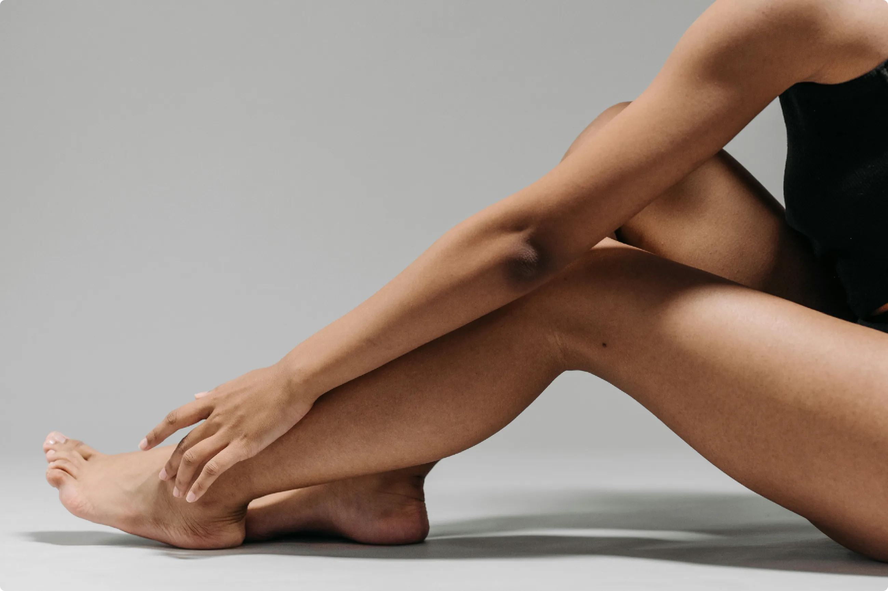

Achillessehnenbeschwerden entstehen häufig durch Überlastung, Sportverletzungen oder muskuläre Dysbalancen. Die Traditionelle Chinesische Medizin (TCM) behandelt diese Beschwerden mit Akupunktur, Tuina und Kräutertherapie, um Entzündungen zu reduzieren, Schmerzen zu lindern und die Regeneration der Sehne zu fördern.
In der TCM werden Achillessehnenschmerzen als „Sehnen-Bi“ betrachtet. Ursachen sind häufig Qi- und Blutstagnation, Kälte oder Überlastung. Besonders betroffen sind sportlich aktive Menschen sowie Personen mit langem Stehen oder Gehen.
Ja. Akupunktur fördert die Durchblutung, reduziert Entzündungen und aktiviert die Selbstheilungskräfte. Sie eignet sich sowohl bei akuten Reizungen als auch bei chronischen Beschwerden.
Tuina kann verspannte Wadenmuskulatur lockern und die Sehne entlasten. Besonders wirksam ist die Kombination aus Akupunktur und manueller Therapie nach Abklingen der akuten Entzündung.
Chinesische Kräuter unterstützen die Heilung durch entzündungshemmende und durchblutungsfördernde Wirkung. Sie können individuell als Tee oder Granulat verordnet werden.
Während der Heilungsphase sollten starke Belastungen wie Sprinten oder Springen vermieden werden. Dehnübungen, Wärme und geeignetes Schuhwerk unterstützen die Regeneration.
Vereinbaren Sie jetzt Ihren Termin online in unserer Praxis in Zürich Oerlikon.
Hinweis: Dieser Artikel dient der allgemeinen Information und ersetzt keine ärztliche Diagnose. Bei starken oder anhaltenden Beschwerden sollte eine medizinische Abklärung erfolgen.